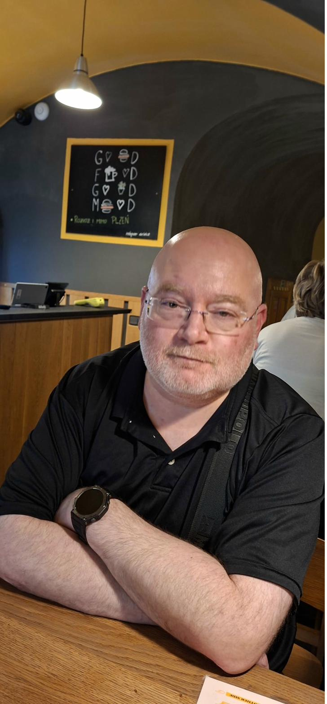

I never planned to become a political scientist. Growing up, I wanted to follow in my father's footsteps and become a physician. When it came time to strengthen my academic profile for medical school, I enrolled in a Bachelor's degree in Political Science at the University of Haifa — mostly to broaden my horizons while I prepared. I didn't expect much. What I found was something I hadn't anticipated: a discipline that made the world make sense.
Before I knew it, I was hooked. Every course opened a new question. Near the end of my degree, I met Professor Yael Yishai, who would later become my Ph.D. supervisor. When she heard about my medical ambitions, she asked me a question I've never forgotten: "Why would you want to do that, when you can study health from a politics perspective?" That was the moment everything clicked. The physician's path didn't disappear — it just found a different shape.
My doctoral dissertation examined how civic associations in Israel influence health-related policy and shape public satisfaction with the health system. At its core, it was a question about ordinary people: how do they affect the politics of healthcare, and under what conditions does their voice actually matter?
That question — how do attitudes translate into action? — became the thread running through everything I've done since. Studying civil society drew me into the broader political world that exists outside formal state institutions: protest movements, political violence, vigilantism, and the conditions under which democracies come under pressure. My postdoctoral work at the University of Texas at Austin deepened this strand, examining existential threats to democratic regimes.
In recent years, I've returned more explicitly to health — not as a departure from political science, but as its continuation. I'm interested in why people deviate from expected health behaviors: why patients leave emergency rooms without being seen, why consumers stay loyal to underperforming health insurers, and how the COVID-19 pandemic reshaped wellbeing and work in Israel and France. The little boy who wanted to be a doctor never fully went away.
I have been a Lecturer at Western Galilee College in Akko since 2013, teaching across the Departments of Criminology, Multi-Disciplinary Studies, and Management. My courses span Research Methodology, Political Violence, War Crimes and Genocide, Health-Related Attitudes and Behavior, and Introduction to Politics.
Beyond the classroom, I have served as Head of the Center for the Advancement of Teaching since 2022, a role that reflects a genuine interest in how learning happens — not just what is taught. I believe that good teaching and rigorous research are not in tension; they sharpen each other.
"Politics is too serious a matter to be left to the politicians."— Charles de Gaulle